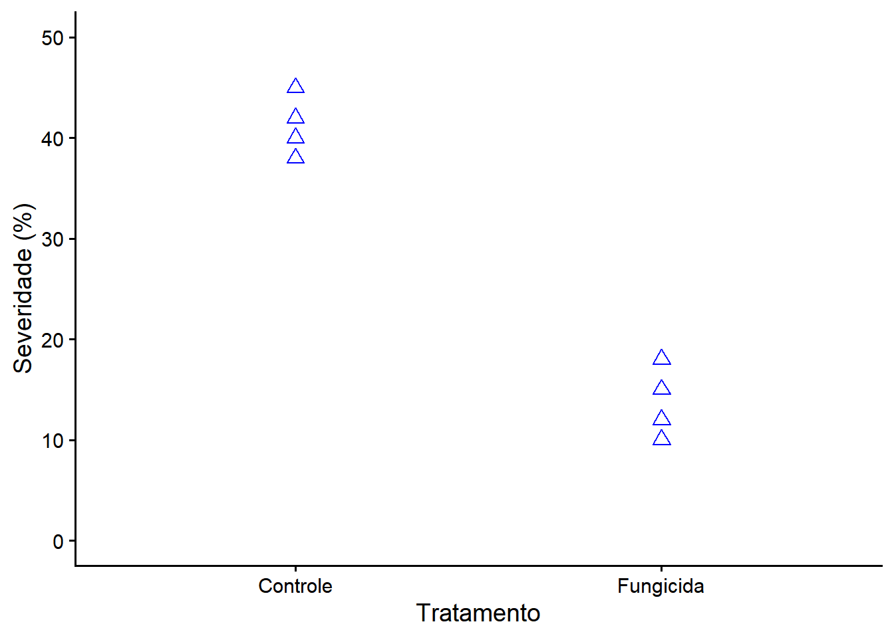
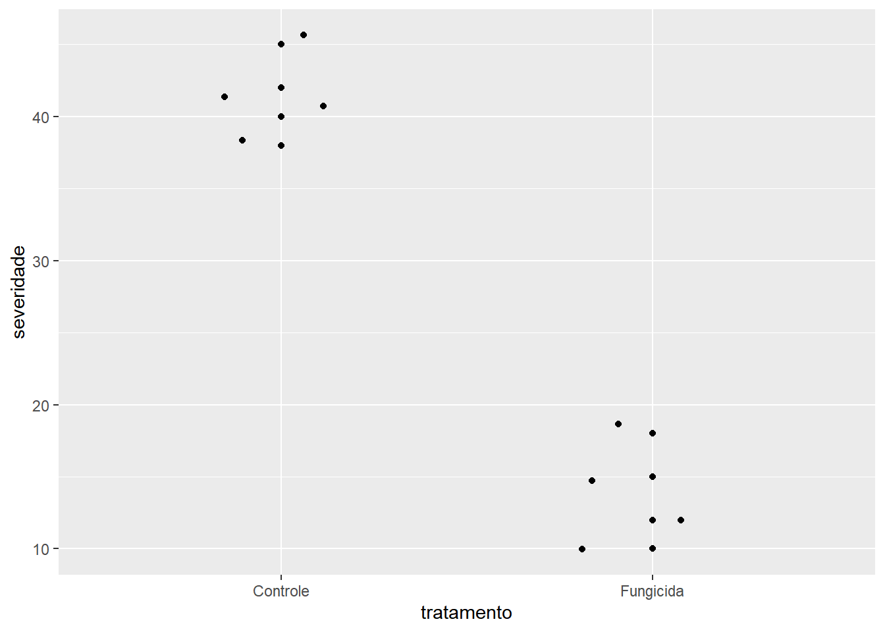

a <- 1
b <- 2
a+b[1] 311/03/26
Nesta primeira aula, vamos introduzir os conceitos em experimentação. Na pesquisa (especialmente nas ciências agrárias e biológicas), nós aplicamos diferentes “tratamentos” a uma população para entender como ela reage.

a <- 1
b <- 2
a+b[1] 3Para se utilizar pacotes que não estão em sua biblioteca, é necessário fazer a sua instalação no Rstudio. Por meio de linhas de código é possível fazer como no seguinte exemplo:
#instalar o tidyverse
install.packages("tidyverse")
#carregar o tidyverse
library(tidyverse)
library(agricolae)
dados<-data(disease)O repositório oficial para a instalação de pacotes no R é o que chamamos de CRAN (Comprehensive R Archive Network), no entanto é possível fazer a instalação de pacotes de outras fontes, permitindo versões mais atuais diretamente dos desenvolvedores.
#Instalar do CRAN; Ex: Pliman
install.packages("pliman")
#Instalar do github; Ex: Pliman
remotes::install_github("TiagoOlivoto/pliman")
#Instalar pacotes do Bioconductor
install.packages("BiocManager")
#Exemplo do EBImage
BiocManager::install("EBImage")Para analisar esses dados, usaremos a linguagem de programação R. Vamos começar com o básico: operações matemáticas e criação de variáveis. Em R, usamos o símbolo <- para “guardar” um valor dentro de um nome (variável).
| Planta | Tratamento | Severidade da doença (%) |
|---|---|---|
| 1 | Controle | 42 |
| 2 | Controle | 38 |
| 3 | Controle | 45 |
| 4 | Controle | 40 |
| 5 | Fungicida | 12 |
| 6 | Fungicida | 18 |
| 7 | Fungicida | 15 |
| 8 | Fungicida | 10 |
planta <- c(1,2,3,4,5,6,7,8) #definir a quantidade de unidades observacionais
#ou
planta <- seq(1:8)
planta #exibir o vetor criado[1] 1 2 3 4 5 6 7 8tratamento <- c("Controle","Controle","Controle","Controle", "Fungicida","Fungicida","Fungicida","Fungicida") #definir os fatores do experimento
severidade <- c(42,38,45,40,12,18,15,10) #Definir a variável resposta
dados <- data.frame (planta,tratamento,severidade) #juntar esses vetores em um data frame e definir esse como o objeto "dados"
dados #exibir o data frame planta tratamento severidade
1 1 Controle 42
2 2 Controle 38
3 3 Controle 45
4 4 Controle 40
5 5 Fungicida 12
6 6 Fungicida 18
7 7 Fungicida 15
8 8 Fungicida 10É possível também representar visualmente os dados com o gráficos usando o R. No próximo chunk observa-se que é possível, dentre vários pacotes utilizar o “ggplot2” para tal.
library(ggplot2)
#Ex 1:
ggplot(dados, aes(tratamento,severidade))+ #Fazer base de fundo para o gráfico
geom_point(color= "blue", size=3, shape=2)+ #Adicionar e modificar os pontos
ylim(0,50)+ #Definir o limite do eixo Y
theme_classic(base_size = 14) + #Escolher os temas
labs(x="Tratamento",
y="Severidade (%)") #Corrigir as legendas dos eixos
#Ex 2:
ggplot(dados, aes(tratamento,severidade))+
geom_point()+
geom_jitter(width=0.2) #quando os pontos estão muito juntos e separa eles
Um dos usos mais comuns da linguagem R dentro da agronomia/fitopatologia é a realização de testes estatísticos para a tomada de decisão com base em dados empíricos. O Teste T de Student é um teste paramétrico de hipóteses que permite comparar as médias de dois grupos independentes (neste caso, “Controle” e “Fungicida”) para verificar se a diferença observada entre eles é estatisticamente significativa, ou se ocorreu apenas ao acaso.
Neste exemplo, utilizamos o Teste T assumindo que as variâncias dos dois grupos são iguais (var.equal = TRUE, ou seja, homocedasticidade). O valor-p (p-value) resultante do teste indicará a probabilidade de observarmos uma diferença tão grande quanto a da nossa amostra, assumindo que a hipótese nula é verdadeira. Se \(p \le 0,05\), geralmente rejeitamos \(H_0\).
# Realização do Teste T para comparar a severidade entre Controle e Fungicida
resultado_teste <- t.test(severidade ~ tratamento, data = dados, var.equal = TRUE)
resultado_teste
Two Sample t-test
data: severidade by tratamento
t = 11.955, df = 6, p-value = 2.076e-05
alternative hypothesis: true difference in means between group Controle and group Fungicida is not equal to 0
95 percent confidence interval:
21.87122 33.12878
sample estimates:
mean in group Controle mean in group Fungicida
41.25 13.75